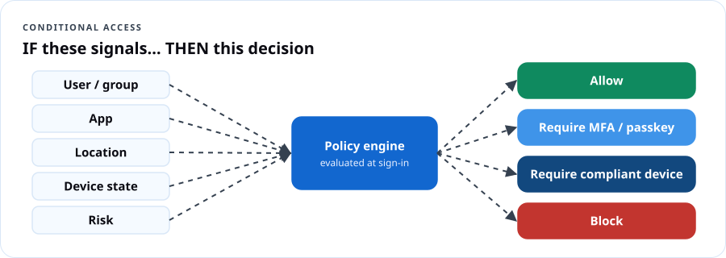
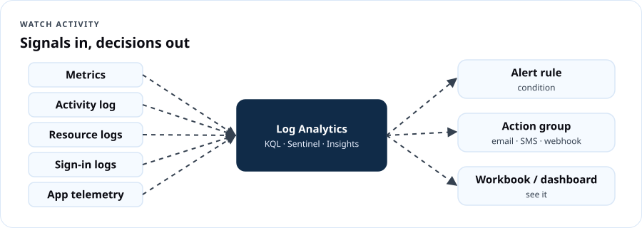

Cloud Security — Verify, Limit, Watch
Course overview
Most cloud breaches don't start with movie-style hacking. They start with a stolen password, an account with too much access, or activity nobody was watching. DCT's Cloud Security program is built around three controls:

- Verify sign-in — every person and app proves who they are, strongly.
- Limit access — least privilege, just-in-time, segmented networks, protected data.
- Watch activity — logs, alerts, posture scores and a plan for when something goes wrong.
You'll practice each in Microsoft Entra, Azure and Microsoft Purview, and finish ready for SC-900: Microsoft Security, Compliance, and Identity Fundamentals.
Certification alignment
| SC-900 domain (as of July 28, 2026) | Weight | DCT module |
|---|---|---|
| Concepts of security, compliance and identity | 10–15% | 1 |
| Capabilities of Microsoft Entra | 25–30% | 2, 3 |
| Capabilities of Microsoft security solutions | 35–40% | 4, 5 |
| Capabilities of Microsoft compliance solutions | 20–25% | 6 |
Where this leads: SC-500 Cloud and AI Security Engineer Associate (replaced AZ-500, which retired August 31, 2026), SC-200 (Security Operations Analyst), SC-300 (Identity and Access Administrator). Existing AZ-500 holders keep their credential until it expires but cannot renew it — they must pass SC-500 to stay current.
Learning outcomes
- Explain shared responsibility, defense in depth, Zero Trust, encryption vs. hashing, and GRC.
- Configure MFA, passwordless methods and Conditional Access; protect emergency ("break glass") accounts.
- Apply least privilege with RBAC, PIM and access reviews.
- Describe and use Azure network and infrastructure protections: NSGs, Firewall, WAF, DDoS, Bastion, Key Vault.
- Read a Defender for Cloud secure score; explain Defender XDR and Microsoft Sentinel.
- Describe Purview: sensitivity labels, DLP, retention, insider risk, eDiscovery, audit, Compliance Manager.
- Run a basic incident response tabletop.
Lab environment
A free Azure subscription plus a Microsoft Entra ID P2 / Microsoft 365 E5 trial (or a Microsoft 365 Developer Program sandbox if eligible) to try Conditional Access, PIM and Purview. Never practice on your employer's production tenant.
Module 1 — Security concepts that never change
1.1 Shared responsibility
The provider secures the cloud; you secure what you put in it. Data, devices, accounts and identities are always yours (see AZ-900 Lesson 1).
1.2 Defense in depth
Layers: physical → identity & access → perimeter → network → compute → application → data. Each layer buys time and limits damage.
1.3 Zero Trust

- Verify explicitly — use every signal: user, device health, location, risk.
- Use least-privilege access — just-in-time and just-enough.
- Assume breach — segment, encrypt, monitor, and limit blast radius.
Dope Translation: Old-school security was the club with one bouncer at the front door — get past him and you can go anywhere, VIP included. Zero Trust puts a check at every door inside, and the wristband expires at midnight.
1.4 Encryption and hashing
| Encryption | Hashing | |
|---|---|---|
| Reversible? | Yes, with a key | No (one-way) |
| Use | Protect data at rest and in transit | Store passwords, verify integrity |
| Types | Symmetric (one shared key, e.g., AES) · Asymmetric (public/private key pair, e.g., RSA, ECC) | SHA-256 etc., with salting for passwords |
1.5 Governance, risk and compliance (GRC)
- Governance: the rules and who owns decisions.
- Risk: what could go wrong × how likely × how bad.
- Compliance: meeting laws, regulations and standards (e.g., NIST SP 800-53, FedRAMP, HIPAA, FERPA, CJIS, PCI DSS). Also: data residency, data sovereignty, data privacy.
1.6 Identity concepts
Authentication vs. authorization; identity providers (IdP) like Microsoft Entra ID; directory services (Active Directory); federation (trust between IdPs so one sign-in works across organizations).
Module 2 — Verify sign-in (Microsoft Entra)
2.1 Identity types
- Users: members and guests.
- Workload identities: service principals, managed identities (system- or user-assigned), and now agent identities for AI agents.
- Devices: registered, joined, hybrid joined.
- Hybrid identity: sync on-prem AD to Entra (Entra Connect / Cloud Sync) using password hash sync, pass-through auth or federation.
2.2 Authentication methods (strongest at top)
| Strength | Methods |
|---|---|
| Phishing-resistant | Passkeys (FIDO2 security keys, passkeys in Microsoft Authenticator), Windows Hello for Business, certificate-based authentication |
| Strong | Microsoft Authenticator push with number matching, OATH TOTP codes |
| Weaker | SMS, voice call |
| Weakest | Password alone |
Password protection: Entra blocks known weak passwords plus a custom banned list (e.g., your org's name + "2026!"), and smart lockout slows brute force.
Real Talk: Microsoft now enforces MFA for anyone signing in to the Azure portal, CLI and admin centers. Attackers responded with phishing kits that steal MFA sessions in real time — which is exactly why passkeys (phishing-resistant) are the goal, not just "any MFA."
2.3 Conditional Access

Signals (user/group, app, location, device, sign-in and user risk) → decision (block, grant with requirements: MFA, authentication strength, compliant device, terms of use) → session controls.
Baseline policies every tenant should have: 1. Require MFA (or phishing-resistant strength) for all users. 2. Require phishing-resistant MFA for admins. 3. Block legacy authentication. 4. Require compliant or hybrid-joined devices for sensitive apps. 5. Block or require MFA for high sign-in risk (ID Protection, P2).
Always deploy new policies in Report-only mode first, and exclude your emergency access accounts.
2.4 Break glass: emergency access accounts
When every admin is locked out — a bad Conditional Access policy, an MFA outage, a federation failure — who has the spare key?
Microsoft's guidance:
- Create two or more emergency access accounts that are cloud-only (use the *.onmicrosoft.com domain), not tied to any person, with the Global Administrator role permanently assigned.
- Protect them with phishing-resistant authentication (FIDO2 passkeys or certificate-based auth), stored securely and separately.
- Exclude at least one from Conditional Access policies that could lock everyone out, and use different methods for each account.
- Monitor every sign-in with an alert (Log Analytics / Sentinel), and test them on a schedule.
Dope Translation: It's the spare key in the lockbox at grandma's house. Two keys, two lockboxes, nobody uses them for everyday stuff, and if that lockbox ever opens, everybody's phone rings.
Read the full guidance: Manage emergency access accounts in Microsoft Entra ID.
Lab 2 — Lock the front door (90 min)
- Entra admin center → Protection → Authentication methods: enable Passkey (FIDO2) and Microsoft Authenticator (number matching is on by default).
- Register a passkey for your test admin.
- Create emergency account
bg-admin1@<tenant>.onmicrosoft.com; assign Global Administrator; register its own passkey; document storage. - Conditional Access: create "CA01 – Require MFA – All users" (exclude
bg-admin1) in Report-only. Sign in as a test user and read the sign-in log's Report-only tab. - Create "CA02 – Block legacy authentication".
- Add custom banned passwords: your org name, local sports teams, "Password", the current year.
Module 3 — Limit access
3.1 Least privilege in practice
- Azure RBAC for resources; Entra roles for directory admin. Prefer built-in, narrowly scoped roles (Helpdesk Administrator, not Global Administrator).
- Keep Global Administrators to fewer than five (Microsoft recommendation), plus break-glass accounts.
3.2 Privileged Identity Management (PIM)
Eligible instead of active assignments. Users activate a role for a limited time, with MFA, justification, optional approval, and notifications. Applies to Entra roles, Azure roles and groups.
Dope Translation: PIM is the temporary God-mode from our AZ-104 page — you check out the master key with a reason, a manager signs, it comes back by itself in two hours, and there's a record.
3.3 Microsoft Entra ID Governance
- Access reviews: owners recertify who still needs access (quarterly is common).
- Entitlement management / access packages: request → approve → time-bound access → automatic removal.
- Lifecycle workflows: joiner/mover/leaver automation.
3.4 Microsoft Entra ID Protection
Detects user risk (leaked credentials) and sign-in risk (unfamiliar location, impossible travel, anonymous IP, password spray) and feeds Conditional Access.
Lab 3 — Shrink the blast radius (60 min)
- Count your Global Administrators. Reduce to the minimum.
- PIM: make your test admin eligible for User Administrator (max 2 hours, require justification + approval). Activate it, then watch it expire.
- Create an access review for a guest group, reviewer = group owner, every 90 days.
- Review ID Protection → Risky sign-ins (empty in a new tenant; read the risk types).
Module 4 — Protect the infrastructure
| Service | What it protects against |
|---|---|
| Network security groups | Unwanted traffic to subnets/NICs (allow/deny rules) |
| Azure Firewall | Centralized, stateful filtering, threat intelligence, FQDN rules; Premium adds TLS inspection and IDPS |
| Web Application Firewall (WAF) | OWASP-style attacks (SQL injection, XSS) on web apps, on Application Gateway or Front Door |
| Azure DDoS Protection | Volumetric and protocol attacks on public IPs |
| Azure Bastion | RDP/SSH exposure — admin access without public IPs |
| Azure Key Vault | Exposed secrets, keys and certificates |
| Private endpoints | PaaS data exposed on the public internet |
Dope Translation: NSGs are locks on each door. Firewall is the guard at the front gate checking every car. WAF is the guard who also checks the packages for anything sketchy. DDoS protection keeps a mob from blocking the street. Bastion is the staff-only entrance with a camera. Key Vault is the safe.
Lab 4 — Close the open doors (60 min)
- Create a VM without a public IP; reach it only through Bastion (Developer SKU where available, or Basic — delete after).
- Create a Key Vault (RBAC model, purge protection on); store a secret; grant a managed identity Key Vault Secrets User.
- Check Defender for Cloud → Recommendations for "Management ports should be closed" before and after.
Module 5 — Watch activity
5.1 Microsoft Defender for Cloud
- CSPM (posture): continuous assessment, secure score, recommendations, attack path analysis (Defender CSPM plan), regulatory compliance dashboards.
- CWP (workload protection): Defender for Servers, Storage, SQL, Containers, App Service, Key Vault, APIs, AI services.
- Multicloud: Azure, AWS, GCP; hybrid via Azure Arc.
5.2 Microsoft Defender XDR
Unified incidents across Defender for Endpoint (devices), Defender for Office 365 (email/collaboration), Defender for Identity (on-prem AD), Defender for Cloud Apps (SaaS/CASB), plus Defender Vulnerability Management and Defender Threat Intelligence.
5.3 Microsoft Sentinel
Cloud-native SIEM (collect and correlate logs, analytics rules, incidents) + SOAR (playbooks automate response). Data connectors, workbooks, hunting with KQL, UEBA. Sentinel is now managed in the Microsoft Defender portal alongside XDR.

Dope Translation: Defender for Cloud is the building inspector with a checklist and a grade. Defender XDR is the security guards on every floor sharing one radio channel. Sentinel is the control room with every camera feed, the incident board, and a playbook binder that can lock doors automatically.
5.4 Detect break-glass use (KQL)
SigninLogs
| where UserPrincipalName in~ ("bg-admin1@contoso.onmicrosoft.com", "bg-admin2@contoso.onmicrosoft.com")
| project TimeGenerated, UserPrincipalName, IPAddress, Location, ResultType, AppDisplayName
Turn this into a log search alert (or Sentinel analytics rule) that pages the whole admin team.
Lab 5 — Turn on the cameras (75 min)
- Send Entra sign-in and audit logs to a Log Analytics workspace (Diagnostic settings).
- Create the break-glass alert above with an action group; sign in as
bg-admin1to test. - Defender for Cloud: record your secure score; fix two recommendations; record it again.
- Optional: enable a Sentinel trial on the workspace; add the Entra ID connector; open the Identity & Access workbook.
Module 6 — Protect the data (Microsoft Purview)
| Capability | What it does |
|---|---|
| Service Trust Portal | Microsoft's audit reports, certifications, compliance documents |
| Compliance Manager | Assessments against regulations, compliance score, improvement actions |
| Data classification | Sensitive information types (SSN, credit card), trainable classifiers, content explorer |
| Sensitivity labels | Classify and protect (encrypt, watermark, restrict) documents, emails, sites, Teams |
| Data loss prevention (DLP) | Stop sensitive data leaving via email, Teams, endpoints, browsers and AI apps |
| Data lifecycle & records management | Retention policies/labels; declare records |
| Insider risk management | Detect risky user activity (data theft before departure, leaks) |
| eDiscovery & Audit | Find, hold and export content for legal cases; search audit logs |
| DSPM for AI | See and control sensitive data used with Copilot and other AI apps |
Microsoft's privacy principles: control, transparency, security, strong legal protections, no content-based targeting, benefits to you.
Real Talk: A school district labels student records Confidential – FERPA. DLP blocks those files from being emailed outside the district or pasted into unapproved AI tools; retention keeps them the required years; audit shows who opened them.
Lab 6 — Label it, guard it (60 min)
- Purview portal → Information protection → create labels Public, Internal, Confidential. Publish to your test users.
- Create a DLP policy for U.S. Social Security numbers in Exchange and OneDrive in simulation mode.
- Open Compliance Manager and review the default data protection baseline score.
Capstone — Incident tabletop: "The Friday Night Text"
Scenario: 9:47 p.m. Friday. A county program coordinator reports a text: "Your M365 password expires tonight — verify here." She clicked and entered her password and MFA code. At 10:02 p.m., an inbox rule forwarding all mail to an outside address appears. At 10:15 p.m., someone downloads 600 files from a SharePoint site labeled Confidential.
Your team must produce: 1. Timeline of attacker actions and which logs prove each (sign-in logs, audit logs, Defender XDR incident, Purview audit). 2. Containment: revoke sessions, reset credentials, remove inbox rule, block sign-in, isolate device. 3. Eradication & recovery: passkey registration, CA policy for phishing-resistant MFA, DLP rule, user training. 4. Communication: who you notify (leadership, legal, possibly affected residents — follow your jurisdiction's breach law). 5. Lessons learned: three controls that would have stopped it at each stage: verify, limit, watch.
Rubric: accuracy of investigation 30 · containment speed & order 25 · prevention controls 25 · communication 10 · clarity 10.
Practice exam (SC-900 style, 30 questions)
Instructor notes
- The break-glass comic on the DCT Programs page is the perfect opener for Module 2. Read it aloud, then open Microsoft's guidance.
- Veterans: map Zero Trust to "trust but verify" checkpoints and need-to-know; map incident response to after-action reviews.
- Agencies: add your jurisdiction's breach notification law and records retention schedule to Module 6.
- Keep it current: Microsoft renames security products often (e.g., Sentinel moved into the Defender portal; AZ-500 → SC-500). Recheck the SC-900 study guide before each cohort.
Resources
- SC-900 study guide
- SC-500 study guide
- Microsoft Zero Trust
- Emergency access accounts
- CISA Secure Cloud Business Applications (SCuBA) baselines